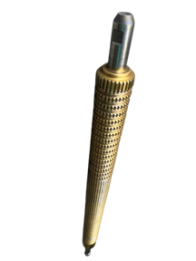
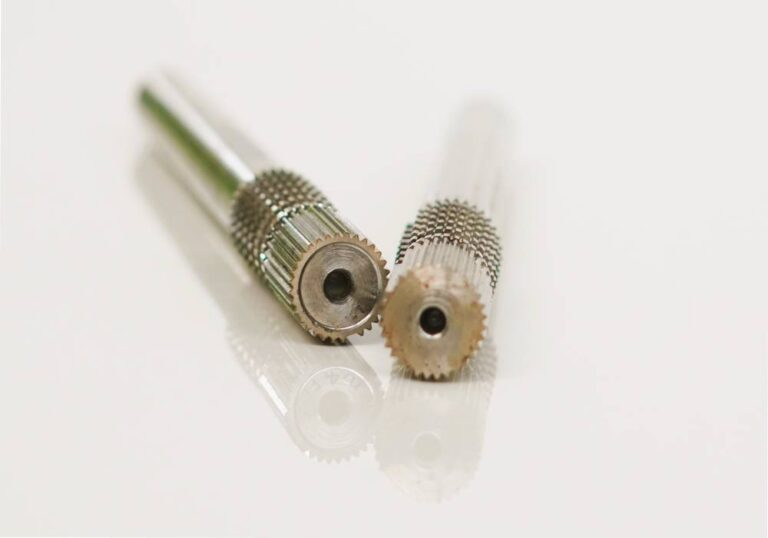
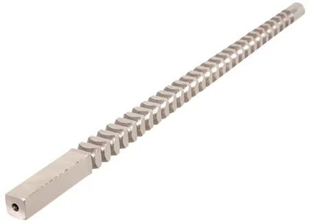

Broach tool
Keyway Broaches
For keyway slots in bores.
Explore our broach tooling and PTO shaft yokes. Contact us to discuss your exact specifications and application.
No matching products found. Try another search or category.
Internal and external broach tooling for standard and custom requirements.
For keyway slots in bores.

Involute, straight and serration designs.

For external flat or contoured surfaces.

For round-hole broaching applications.

Precision broaching for involute profiles.

Manufactured for demanding workshop use.

For hexagonal internal profiles.

For square internal profiles.
A selection of yokes and PTO shaft components from our range. Ask us about model, fitment and specifications.